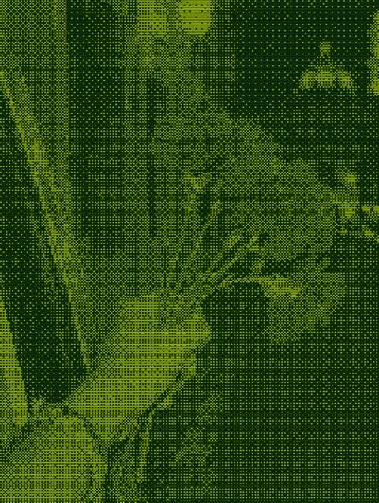
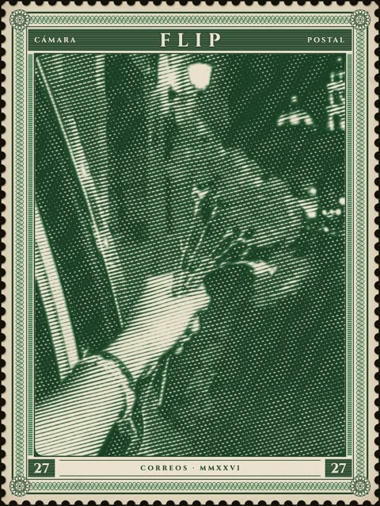
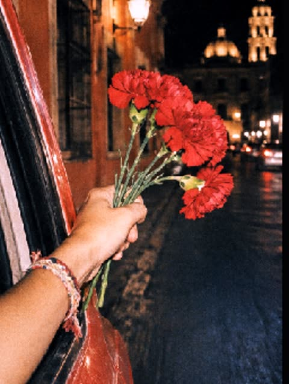
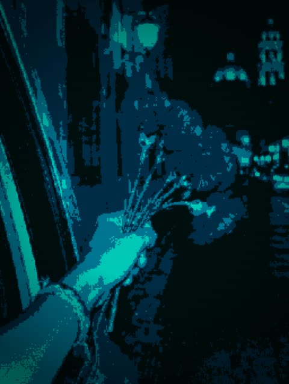
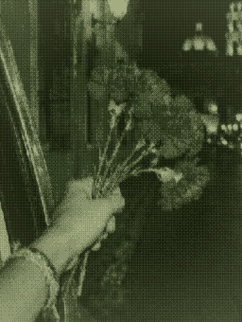
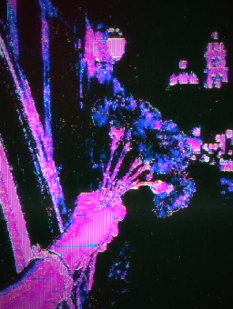
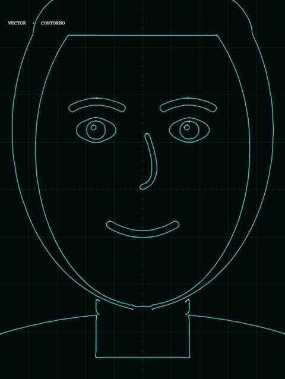
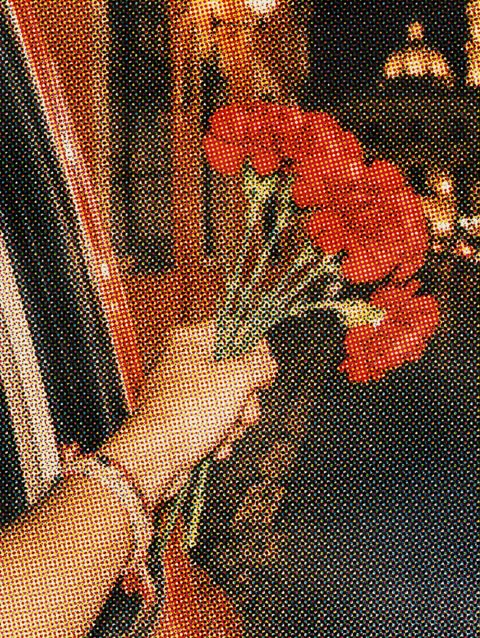

Abrir FLIP
Abrir FLIP
FL-27 · Cámara digital
Tu teléfono, con cámaras de otra época.
FLIP es una cámara que corre en tu navegador. Pantalla de consola portátil, sello postal, imprenta a cuatro tintas, tubo de neón: eliges una, disparas y te llevas la foto o el video.
Sin tienda y sin cuenta. Funciona en Chrome para Android y en Safari para iPhone.
La película
Veinticinco segundos para conocerla.
El aparato que ves es la app: los mismos botones, el mismo visor y las mismas cámaras que vas a traer en la bolsa.
Las cámaras
La misma toma, ocho maneras de verla.
Cada cámara trae sus variantes y sus perillas. Estas son ocho; adentro hay más.








Llévala en tu pantalla de inicio
Se instala desde el navegador, en un minuto.
Instalada se abre a pantalla completa, funciona sin conexión y se actualiza sola.
Android
- Abre FLIP en Chrome.
- Toca Instalar aquí arriba, o el menú ⋮ y luego Instalar app.
- Dale permiso a la cámara la primera vez.
iPhone
- Abre FLIP en Safari.
- Toca Compartir y luego Agregar a Inicio.
- Ábrela desde su ícono y dale permiso a la cámara.
Computadora
- Abre FLIP en Chrome o Edge.
- Usa tu cámara web tal cual.
- Con FLIP STAGE mezclas en vivo y proyectas en otra pantalla.